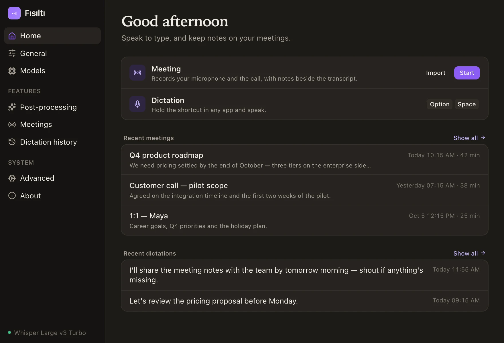
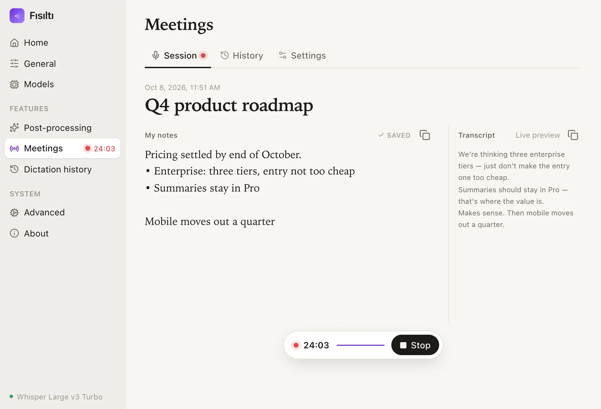

fı·sıl·tı /fɯ.sɯɫ.tɯ/ · noun, Turkish · a whisper
Fısıltı.
Private, local-first dictation and AI meeting notes for macOS. Everything you say is transcribed on your Mac — and stays there.
Local until you say otherwise
Speech recognition runs on your machine by default. No account, no telemetry, nothing uploaded. Cloud transcription exists, but it is off until you turn it on — and the app says so on screen while it is running.
Summaries on your terms
AI meeting notes are optional and use a provider you choose — OpenRouter, Google Gemini, a local Ollama, or any OpenAI-compatible endpoint.
Open and auditable
MIT-licensed, built on Handy. Read the code, build it yourself, own the result.


Dictation
Press, speak, it's typed.
Hold a shortcut and talk. When you let go, your words are pasted into whatever app you're in — editor, browser, chat, terminal.
- Whisper & Parakeet models — GPU-accelerated where available, downloaded on first use.
- Voice activity detection trims the silence so you get text, not dead air.
- Push-to-talk or toggle, your shortcut, your choice.
anywhere a cursor blinks
…and that's exactly why the quiet path is the fast path.Meeting mode
It notices the meeting before you do.
Meeting detected
Zoom appears to be in a meeting. Start transcription?
Let's lock the launch date.
Thursday works — the notes are already in Fısıltı.
Then it's Thursday.
When Zoom, Meet, Teams — or a browser tab — starts using the microphone, Fısıltı quietly offers to take notes. One click and it captures your mic and the system audio together, transcribing live with per-speaker labels.
And when the room goes quiet, it asks whether the meeting is over — then wraps up on its own if you've already left.
Recorded the talk on your phone instead? Drop the voice memo on Fısıltı and it gets the same treatment — transcript, title and summary — as a meeting it captured itself.
- Auto-detection of meeting apps and browser calls (opt-in).
- Auto-end on silence with a configurable timeout and grace period.
- High-quality finalize pass re-transcribes the whole session when you stop.
- History with playback — transcripts, notes and audio, stored locally.
- Named after the real meeting — the calendar event in progress, or the app's window title.
- Nothing lost to a crash — an interrupted session keeps its audio and can be transcribed later.
- Transcribe a recording — m4a, mp3, wav, flac, ogg from any phone or recorder.
- Straight into your notes — every meeting written as Markdown to a folder you choose, Obsidian-ready.
Optional · bring your own key
When on-device isn't enough.
Some things a local model simply cannot do: tell four remote voices apart, or translate a conversation while it is still happening. Fısıltı can hand those jobs to Google's Gemini models — only if you switch it on, only with your own API key, and never without saying so on screen.
Every meeting shows what it cost, next to how long it ran.
- Speaker identification — "Speaker 1", "Speaker 2" instead of one anonymous block of everyone else.
- Live translation — follow a meeting in a language you don't speak, original and translation side by side.
- On-screen subtitles — a click-through strip at the bottom of your display, hidden from screen sharing.
- Custom vocabulary — the names, products and jargon your meetings are actually about.
A whisper is a sound that stays in the room.
By default, so is everything Fısıltı hears: the models run here, the history lives here, and the only network calls are the ones you configure yourself. Cloud transcription can do things a local model cannot — tell several people apart, translate as they speak — so it is offered, switched off, with your own key and a running cost shown on every meeting. The choice is yours to make, not ours to make quietly.
Install
Download it. Or build it.
$ git clone https://github.com/umitaltintas/fisilti && cd fisilti
$ bun install
$ bun run build:mac # signs with a stable local identity
$ ditto "src-tauri/target/release/bundle/macos/Fısıltı.app" /Applications/aarch64 for Apple Silicon, x64 for Intel
— and drag Fısıltı into Applications. Rather read every line first?
The commands above build the same app from source; you need
Rust and
Bun.